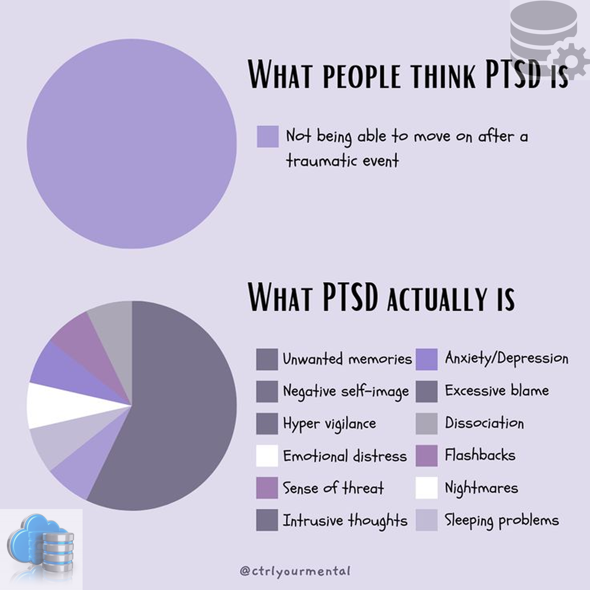
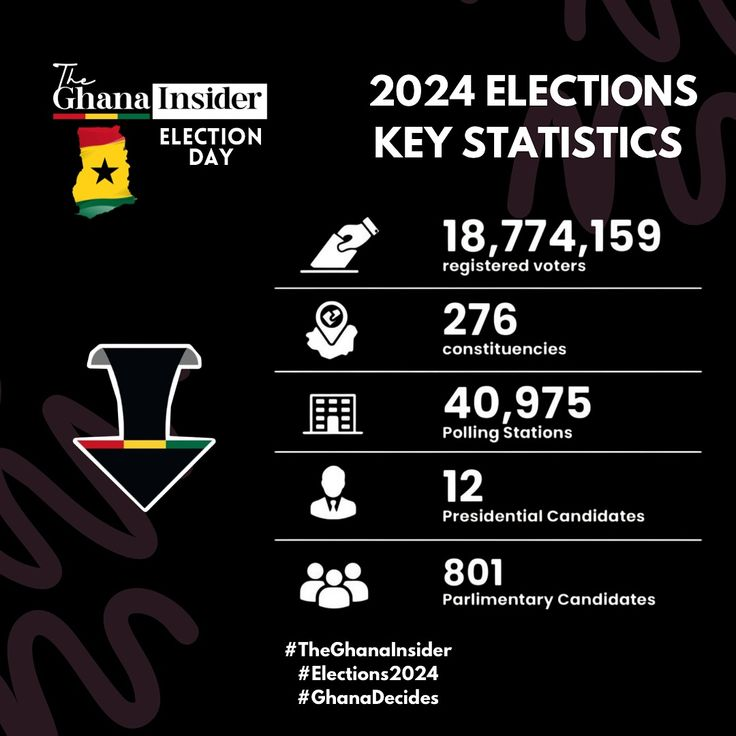

Interactive Customer Churn Prediction Web App Using Streamlit.
Password for the Protected App:machinelearning.
In this project,my goal is to develop a multi-page interactive web application
using Streamlit that classifies customers as “Churn” or “No Churn” based on historical behavior
and service usage data. The focus is to apply machine learning classification techniques and
present the results through a clean, interactive dashboard.


Using real-world data from multiple sources to generate insights into the
factors that drive housing and apartment prices/sales in major global cities(Accra, Florida and Mumbai).

his project focuses on the development of a relational database system that supports the
tracking and analysis of therapy sessions conducted in virtual reality (VR) environments for
patients suffering from Post-Traumatic Stress Disorder (PTSD). The aim is to create a system that
efficiently records patient data, VR therapy session details, clinician involvement, trauma
scenarios, and therapy outcomes over time.

Core media topics during the 2024 election.
Recommendations produced: Developed 10 data-driven operational recommendations covering bike redistribution, dynamic pricing, electric bike expansion, seasonal planning, and real-time monitoring infrastructure.
Tools & Skills demonstrated: Descriptive analytics, trend analysis, seasonality detection, demand forecasting logic, data storytelling, and operational strategy translation from raw data..